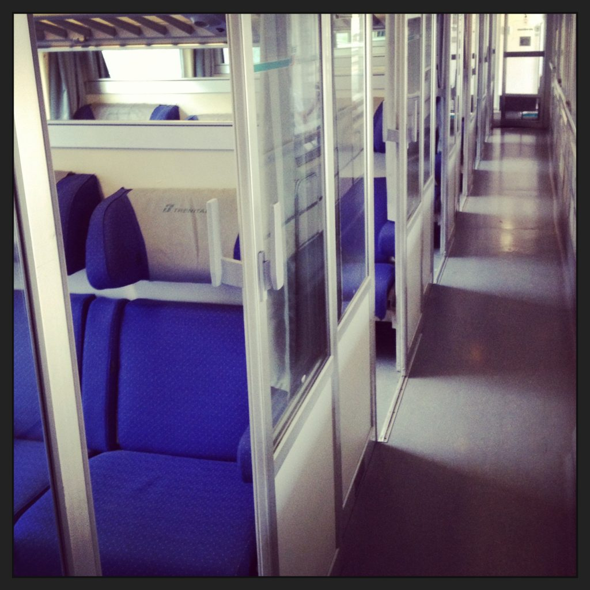

Some Italian train cars are divided into compartments, while others are open spaces
Train stations in Italy are open spaces, meaning that when it’s time to board your train you don’t have to go through a check-in point (like in Seattle, for example). Once you get to the train station, and after you have purchased your ticket and have validated it, simply locate your train with the help of the indicator board and get on. The ticket conductor will check it during the trip. Note: If you have a seat reservation, there is no need to validate your ticket before getting onboard. {This is an excerpt from chapter 1 “Transportation” of the eBook “Italy from the Inside. A native Italian reveals the secrets of traveling in Italy”. Buy our eBook on Amazon and leave us a review! If it’s good, you’ll make us happy, if it’s bad, you’ll make us improve. Thank you either way!}